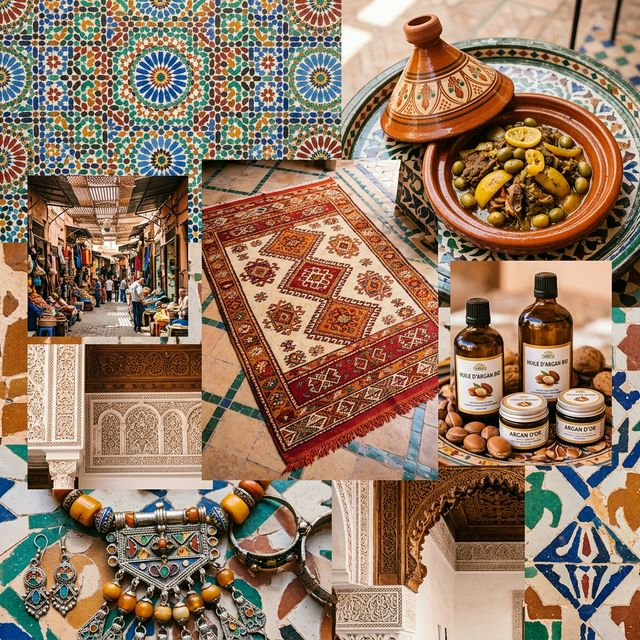
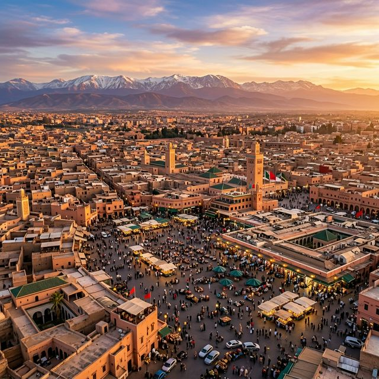
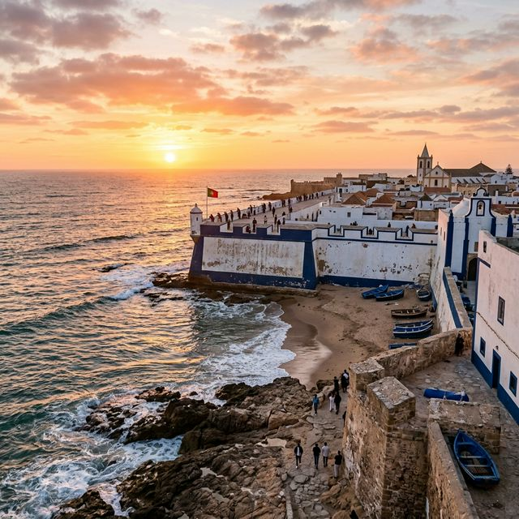

Plongez dans l'âme du Royaume : chaque artisan, chaque plat, chaque mélodie raconte une histoire millénaire de beauté, de résistance et de transmission.
Cliquez sur une catégorie pour explorer ses secrets, son origine et sa signification culturelle

Zellige, poterie, dinanderie, maroquinerie — un savoir-faire millénaire transmis de père en fils.

Tajine, couscous, pastilla, thé à la menthe — la cuisine marocaine, un voyage sensoriel incomparable.

Gnawa, Andalou, Ahouach berbère — chaque rythme est une prière, une histoire, une identité.
Djellaba, caftan, haïk, burnous — chaque habit raconte une région, une époque et une fierté.
Trois portes d'entrée vers une expérience culturelle authentique et mémorable
Explorez chaque élément culturel géolocalisé sur notre carte interactive. Filtrez par artisanat, gastronomie ou traditions selon votre position.
Ouvrir la carte →Trouvez un maître artisan près de vous. Chaque profil inclut sa spécialité, ses œuvres et la possibilité de prendre rendez-vous directement.
Trouver un artisan →Ateliers zellige, repas traditionnel en riad, soirée Gnawa, visite guidée de medina — réservez directement et soutenez les acteurs locaux.
Voir les expériences →
Le zellige n'est pas qu'un art, c'est un héritage.
Chaque fragment de céramique cassé à la main traduit un siècle de patience,
de foi et de transmission silencieuse entre un père et son fils.
Fatima façonne l'argile depuis l'âge de 12 ans, comme sa mère et sa grand-mère avant elle. Ses pots voyagent jusqu'en Europe, mais ses mains restent au Maroc.
Chaque juin, la ville bleue vibre au son du guembri. 500 000 personnes, autant d'âmes qui entendent parler l'Afrique profonde à travers un instrument à 3 cordes.
150 heures de broderie. Les mains de Khadija tremblent légèrement en posant le dernier fil d'or sur un caftan qui sera porté une seule fois — mais dont la mémoire durera toujours.
Chaque lieu raconte une histoire. Chaque artisan attend votre visite. Chaque plat mérite d'être goûté à la source.